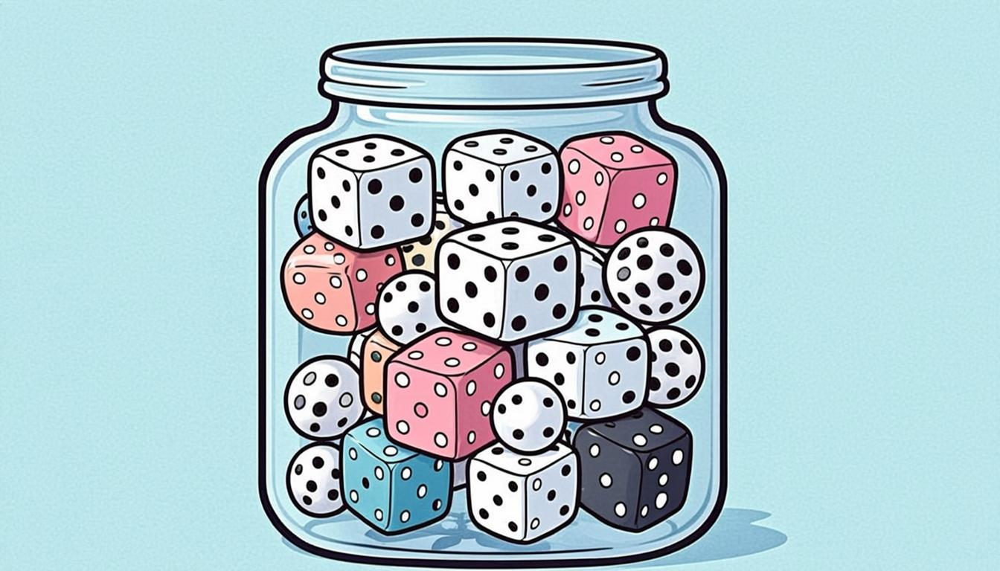

آموزش جامع تصویری چهار درس فصل: از مفهوم مجموعه تا احتمال، با مثالهای حلشدهٔ فراوان
این جزوهٔ مصور، فصل اول ریاضی نهم (مجموعهها) را گامبهگام با مثالهای حلشدهٔ فراوان، کادرهای خطای رایج، ترفندهای امتحان و روشهای تدریس فعال پوشش میدهد و کاملاً منطبق بر کتاب درسی رسمی سال ۱۴۰۵–۱۴۰۶ تنظیم شده است.
۴ درس۱۸+ مثال و تمرینتقویم مطالعهپروژهٔ کلاسی
کتابهای درسی پایه نهم · سال ۱۴۰۵–۱۴۰۶منبع: chap.sch.ir
🎯 اهداف یادگیری
تعریف دقیق مجموعه و تشخیص اینکه یک عبارت، مجموعه است یا نیست
نمایش مجموعه به سه روش: آکولادی، محدودهای (مشخصهای) و نمودار ون
تشخیص عضو و غیرعضو با نمادهای ∈ و ∉ و درک مجموعهٔ تهی
محاسبهٔ اجتماع، اشتراک و تفاضل مجموعهها و رسم آنها روی نمودار ون
محاسبهٔ احتمال رویدادها با شمارش عضوهای مجموعه
🧭 پیشنیازها
عددهای طبیعی، شمارنده (عوامل) و عددهای اول و مرکب (ریاضی هفتم و هشتم)
مفهوم کسر و درصد برای بخش احتمال
رسم منحنیهای بسته و خواندن شکلهای ساده
درس ۱ — معرفی مجموعه
در زندگی روزمره بارها واژههایی مثل «گروه»، «دسته» و «مجموعه» را به کار میبریم؛ مثلاً «گروهی از ورزشکاران وارد ورزشگاه شدند». اما در ریاضیات، مجموعه معنای دقیقی دارد: مجموعه، گردایهای از اشیای مشخص و متمایز (غیرتکراری) است. کلمهٔ «مشخص» یعنی برای هر شیء بتوان بهطور قطعی گفت عضو است یا نیست؛ و «متمایز» یعنی هیچ عضوی تکرار نمیشود.
✏️ کدام یک مجموعه است؟
سه عبارت زیر را بررسی کنید: الف) عددهای طبیعی و یکرقمی؛ ب) چهار شاعر ایرانی؛ ج) دو عدد اول کوچکتر از ۱۲.
حل گامبهگام:
الف) مجموعه است: A = {1, 2, 3, 4, 5, 6, 7, 8, 9} — مشخص و متمایز.
ب) مجموعه نیست: «شاعر ایرانی» معیار دقیقی نیست و نظرها میتواند فرق کند (چهار شاعرِ کدام دسته؟).
ج) مجموعه است: عددهای اول کوچکتر از ۱۲ یعنی {2, 3, 5, 7, 11}؛ «دو عدد اولِ» آن یعنی مثلاً {2, 3} که مجموعهای معین و یکتاست.
💡 نکته
نتیجهٔ کلیدی کتاب: اگر عبارتی نتواند یک مجموعهٔ معین و یکتا را مشخص کند، آن عبارت مجموعه نیست. مثلاً «عددهای بزرگ» مجموعه نیست، چون «بزرگ» تعریف دقیقی ندارد.
عضو و نمادهای عضویت
اگر a یکی از اشیای مجموعهٔ A باشد، مینویسیم a ∈ A و میخوانیم «a عضو A است». اگر شیء عضو مجموعه نباشد، نماد ∉ را به کار میبریم. مثلاً در A = {1, 2, 3, 4} داریم: 3 ∈ A ولی 4 ∉ A چون عدد ۴ عضو این مجموعه نیست.
چینش اشیا درون دایرهها؛ سادهترین تصویر مفهوم مجموعه و عضویت
نمایش مجموعه با نمودار ون
هر مجموعه را میتوان با یک منحنی بسته (دایره یا شکل بستهٔ دیگر) نمایش داد و عضوهای آن را درون یا بیرونِ منحنی قرار داد. نمودار ون سادهترین ابزار برای «دیدن» مجموعهها و ارتباط میان آنهاست و در سه درس بعدی بارها به آن برمیگردیم.
نمونهٔ نمودار ون دو مجموعه؛ عددهای میان دو منحنی، عضو هیچکدام نیستند
✏️ مثال کتاب — شمارندههای ۶۰
شمارندههای عدد ۶۰ را در نظر بگیرید. شمارندههای اولِ آن کداماند؟ مجموعهٔ شمارندههای اول و مجموعهٔ شمارندههای مرکب را بنویسید.
توجه: عدد ۱ نه اول است و نه مرکب؛ پس به هیچکدام از دو مجموعه تعلق ندارد. این دقت، تفاوت «مجموعه» با «فهرست دلخواه» را نشان میدهد.
⚠️ خطای رایج
عدد ۱ نه اول است و نه مرکب! بسیاری از دانشآموزان آن را در مجموعهٔ عددهای اول مینویسند. این خطا در امتحانها بسیار تکرار میشود.
🎓 راهنمای تدریس (معلم و اولیا)
برای ملموسشدن مفهوم، از دانشآموز بخواهید وسایل روی میز را با یک معیار مشخص (مثلاً «سبز» یا «چوبی») گروهبندی کند و بپرسید: «آیا برای هر شیء میتوان قطعی گفت در گروه است یا نه؟» همین پرسش، شرطِ «مشخص بودن» را در ذهن مینشاند. سپس معیارهای مبهم (زیبا، جالب) را امتحان کنید تا مفهوم «غیرمجموعه» شکوفا شود.
درس ۲ — نمایش مجموعهها، مجموعهٔ تهی و برابری
نمایش آکولادی و محدودهای
دو نمایش اصلی برای مجموعه داریم: در نمایش آکولادی (محدودهای) همهٔ عضوها را داخل آکولاد مینویسیم، مثل A = {1, 2, 3, 4}. در نمایش مشخصهای، بهجای فهرست عضوها، «شرط عضویت» را مینویسیم؛ مثلاً A = {x | x عدد طبیعی و x < 5} که خوانده میشود «مجموعهٔ همهٔ xهایی که x عدد طبیعی و کوچکتر از ۵ است». این نمایش برای مجموعههای بزرگ یا بیپایان بسیار کارآمد است.
✏️ تبدیل نمایش مشخصهای به آکولادی
مجموعهٔ B = {x | x شمارندهٔ ۱۲ است} را به صورت آکولادی بنویسید.
حل گامبهگام:
شمارندههای ۱۲ را مییابیم: 1, 2, 3, 4, 6, 12
پس B = {1, 2, 3, 4, 6, 12} و این مجموعه ۶ عضو دارد.
مجموعهٔ تهی
مجموعهای که هیچ عضوی ندارد را مجموعهٔ تهی مینامند و با نماد ∅ یا آکولاد خالی { } نشان میدهند. مثلاً «مجموعهٔ عددهای دو رقمی و زوجِ اول» تهی است، چون تنها عدد زوجِ اول، خودِ ۲ است که یکرقمی است. دقت کنید که ∅ یک مجموعه است، ولی عدد نیست.
⚠️ خطای رایج
∅ و {0} یکی نیستند! {0} مجموعهای با یک عضو (عدد صفر) است، اما ∅ هیچ عضوی ندارد. تعداد عضوهای ∅ برابر صفر و تعداد عضوهای {0} برابر یک است.
مجموعههای برابر
دو مجموعه را برابر مینامیم اگر دقیقاً عضوهای یکسانی داشته باشند؛ ترتیب و تکرار اهمیتی ندارد. بنابراین {2, 3, 4} = {4, 3, 2} = {3, 3, 2, 4}. همین قاعده است که نوشتن {3, 3, 4} را بهجای {3, 4} زائد میکند.
✏️ پر کردن جای خالی با قاعدهٔ متمایز بودن
اگر A = {1, 2, 4, 5, ١} نوشته شده و میدانیم این مجموعه ۴ عضو دارد، جای خالی چه عددی است؟
حل گامبهگام:
چون عضوها باید متمایز باشند و نوشتهشدهها {1, 2, 4, 5} چهار عضو متمایزند، جای خالی باید یکی از همین عضوها باشد (تکرار مجاز نیست ولی تکرارِ نوشتنیِ عضو موجود، مجموعه را تغییر نمیدهد). پاسخ کتاب: هر یک از عددهای ۱، ۲، ۴ یا ۵.
درس ۳ — اجتماع، اشتراک و تفاضل
سه عمل اصلی روی مجموعهها، پل ارتباطی بین «دیدن» و «محاسبه کردن» است. برای دو مجموعهٔ A و B:
عمل
نماد
تعریف
نمونه
اجتماع
A ∪ B
همهٔ عضوهای A یا B (یا هر دو)
{1,2,3} ∪ {3,4} = {1,2,3,4}
اشتراک
A ∩ B
عضوهایی که هم در A و هم در B هستند
{1,2,3} ∩ {3,4} = {3}
تفاضل
A − B
عضوهای A که در B نیستند
{1,2,3} − {3,4} = {1,2}
💡 نکته
برای پیدا کردن اجتماع، عضوهای مشترک را فقط «یک بار» مینویسیم؛ چون عضوهای مجموعه متمایزند. مثلاً {1,2} ∪ {2,3} = {1,2,3} و نه {1,2,2,3}.
تدریس عملهای اجتماع و اشتراک روی تخته با دو دایرهٔ همپوشانسه ناحیهٔ بنیادین در نمودار ون: فقط A، اشتراک، و فقط B — تفاضل A−B ناحیهٔ «فقط A» است
✏️ مثال ترکیبی از کتاب
دو مجموعهٔ A = {1, 2, 3, 4} و B = {2, 5, 6, 7, 8} داده شده است. اجتماع، اشتراک، تفاضلهای A−B و B−A و نیز C = A ∪ B را بنویسید. کدام عددها هم در A و هم در B هستند؟
حل گامبهگام:
A ∪ B = {1, 2, 3, 4, 5, 6, 7, 8}
A ∩ B = {2} — عدد ۲ تنها عضو مشترک است.
A − B = {1, 3, 4} و B − A = {5, 6, 7, 8}
دقت کنید (A−B) و (B−A) و (A∩B) سه ناحیهٔ جدا از هماند و اجتماع این سه، همان A ∪ B است.
🚀 ترفند طلایی
برای محاسبهٔ سریع تفاضل، از A هر عضوی که در B هم هست را «پاک» کنید. آنچه میماند، A−B است. اشتراک را قبل از تفاضل حساب کنید تا کار سادهتر شود.
قانون شمارش عضوهای اجتماع
اگر n(A) تعداد عضوهای A باشد، برای دو مجموعه همیشه این رابطه برقرار است: n(A ∪ B) = n(A) + n(B) − n(A ∩ B). این فرمول به شما اجازه میدهد بدون نوشتن تکتک عضوها، تعداد عضوهای اجتماع را حساب کنید و در مسائل آزمون، صرفهجویی بزرگی است.
✏️ کاربرد فرمول شمارش
در یک کلاس، ۱۵ نفر ریاضی المپیاد و ۱۲ نفر ادبیات آمادهسازی میبینند. ۴ نفر هر دو درس را دارند. چند نفر حداقل یکی از دو درس را میبینند؟
حل گامبهگام:
n(A ∪ B) = n(A) + n(B) − n(A ∩ B)
= 15 + 12 − 4 = 23 نفر.
درس ۴ — مجموعهها و احتمال
احتمال، پلی است میان مجموعهها و دنیای پیشبینی. وقتی همهٔ نتایج ممکن یک آزمایش تصادفی را در یک مجموعه به نام فضای نمونه (S) جمع کنیم، احتمال هر رویداد A برابر نسبت تعداد عضوهای آن به تعداد کل نتایج است:
فرمول کلاسیک احتمال برای رویدادهای یکنواخت

تاس و سنگریزه: آزمایشهای تصادفی ساده برای آشنایی با فضای نمونه
✏️ احتمال با تاس
یک تاس سالم را میریزیم. فضای نمونه S = {1, 2, 3, 4, 5, 6}. احتمال رویداد A «ظهور عدد زوج» و رویداد B «ظهور عدد بزرگتر از ۴» چقدر است؟
حل گامبهگام:
A = {2, 4, 6} → n(A) = 3 → P(A) = 3 ÷ 6 = 1/2
B = {5, 6} → n(B) = 2 → P(B) = 2 ÷ 6 = 1/3
A ∩ B = {6} → P(A ∩ B) = 1/6؛ و P(A ∪ B) = 3/6 + 2/6 − 1/6 = 4/6 = 2/3 — دقیقاً همان فرمول درس ۳!
💡 نکته
همان عملهای اجتماع و اشتراک، در دنیای احتمال هم کار میکنند: P(A ∪ B) = P(A) + P(B) − P(A ∩ B). اگر دو رویداد عضو مشترک نداشته باشند (نا سازگار)، اشتراکشان تهی و احتمال اجتماعشان جمع ساده است.
🎓 راهنمای تدریس (معلم و اولیا)
پیشنهاد روند تدریس ۵ جلسهای: جلسهٔ ۱ مفهوم و نمودار ون با فعالیت گروهی دستهبندی اشیا؛ جلسهٔ ۲ نمایش مشخصهای و تهی با بازی «حدس شرط»؛ جلسهٔ ۳ سه عمل با کارتهای عددی و نمودارهای زمینی (دو طناب دایرهای در حیاط!)؛ جلسهٔ ۴ احتمال با تاس و سکه و ثبت داده در جدول؛ جلسهٔ ۵ حل بانک نمونه سوالات و رفع اشکال کاربرگ. در هر جلسه یک خطای رایج را صریح بازگو کنید تا در ذهن تثبیت شود.
خطاهای رایج و ترفندهای امتحان
نوشتن عضو تکراری در اجتماع: همیشه بعد از اجتماع، عضوها را بازبینی کنید.
اشتباه گرفتن ∅ با {0}: تهی یعنی «هیچ»، نه «صفر».
فراموش کردن عدد ۱ در دستهبندی شمارندهها (نه اول، نه مرکب).
در تفاضل، ترتیب مهم است: A−B با B−A برابر نیست (مگر دو مجموعه برابر باشند).
در مسائل احتمال، ابتدا فضای نمونه را کامل بنویسید، بعد رویداد را مشخص کنید.
پاسخ احتمال همیشه عددی بین ۰ و ۱ است؛ اگر جواب شما منفی یا بزرگتر از ۱ شد، جایی خطا دارید.
کاربرگ تمرین در خانه
🗂 کاربرگ تمرین در خانه
1شمارندههای ۲۴ و ۳۶ را بنویسید و مجموعهٔ شمارندههای مشترک آنها را مشخص کنید.
2برای هر یک از مجموعههای A = {1, 2, 4, 8} و B = {x | x² = 4} نمودار ون بکشید.
3سه مثال از عبارتهایی بنویسید که مجموعه نیستند و دلیل مبهم بودنشان را توضیح دهید.
4اجتماع و اشتراک و تفاضلهای دو مجموعهٔ C = {عددهای طبیعی تکرقمی زوج} و D = {عددهای اول تکرقمی} را به دست آورید.
5دو تاس را میریزیم؛ مجموع همهٔ نتایج ممکن را بهصورت مجموعه بنویسید و احتمال «زوج بودن مجموع» را حساب کنید.
چکلیست تسلط فصل — آمادهٔ ارزشیابی هستم؟
میتوانم سه شرط «مشخص، متمایز» را با مثال توضیح دهم و عبارتهای نامعین را رد کنم.
نمایش محدودهای و مشخصهای را به هم تبدیل میکنم (هر دو جهت).
نمودار ون دو مجموعه را با چهار ناحیه کامل رسم میکنم.
اجتماع، اشتراک و تفاضل را با فرمول n(A∪B) کنترل میکنم.
فضای نمونه و رویداد را تفکیک و احتمال را بهصورت کسر ساده مینویسم.
سه خطای رایج فصل (∅ و {0}، عدد ۱، تکرار در اجتماع) را به دیگری آموزش میدهم.
📌 جمعبندی
مجموعه یعنی گردایهای مشخص و متمایز؛ عبارت مبهم، مجموعه نیست.
نمایش مجموعه: آکولادی، مشخصهای و نمودار ون.
اجتماع = همه، اشتراک = مشترکها، تفاضل = فقط خودش.
n(A∪B) = n(A) + n(B) − n(A∩B) هم برای شمارش و هم برای احتمال.
احتمال = نسبت عضوهای رویداد به عضوهای فضای نمونه؛ عددی بین ۰ و ۱.
پیام پایانی فصل
💡 نکته
مجموعهها، الفبای فکر کردنِ منظماند؛ هر جا آیندهات را «دستهبندی» کنی — از برنامهٔ درسی تا لیست خرید — این فصل در خدمت توست. هر روز ۲۰ دقیقه تمرین با قلم، بهتر از ۳ ساعت خواندنِ بیقلم است. موفق باشی!
بانک تمرین بیشتر (با پاسخ کامل)
📝 تمرین B1 — نمایش
مجموعهٔ A = {x | x عدد طبیعی و مضرب ۳ و x < 20} را آکولادی بنویسید و n(A) را بگویید.
پاسخ:
A = {3, 6, 9, 12, 15, 18} و تعداد عضوها n(A) = 6 است. مضربهای ۳ کوچکتر از ۲۰ را بهترتیب بنویسید تا چیزی از قلم نیفتد.
📝 تمرین B2 — عضویت
اگر B = {عددهای اول دو رقمی که رقم یکانشان ۷ باشد} باشد، عضوهای B را بنویسید و تعیین کنید ۲۷ ∈ B درست است یا ۳۷ ∈ B.
پاسخ:
B = {17, 37, 47, 67, 97} (اولهای دو رقمی با یکان ۷: ۲۷ = 3×9 مرکب است). پس ۳۷ ∈ B درست و ۲۷ ∈ B نادرست است.
📝 تمرین B3 — عملها
با M = {a, b, c, d} و N = {c, d, e}: (M ∪ N) و (M ∩ N) و (M − N) و n(M ∪ N) را حساب کنید.
پاسخ:
M ∪ N = {a, b, c, d, e}؛ M ∩ N = {c, d}؛ M − N = {a, b}؛ n(M∪N) = 4 + 3 − 2 = 5. (با شمردن مستقیم هم ۵ به دست میآید — دو روش، یک پاسخ.)
📝 تمرین B4 — فرمول شمارش
در گروهی ۱۸ نفر فوتبال و ۱۱ نفر والیبال بازی میکنند؛ ۵ نفر هر دو. چند نفر فقط فوتبال بازی میکنند و چند نفر حداقل یکی؟
پاسخ:
فقط فوتبال: 18 − 5 = 13 نفر. حداقل یکی: 18 + 11 − 5 = 24 نفر. (فقط والیبال: 6 نفر؛ جمع 13+5+6=24 با پاسخ سازگار است.)
📝 تمرین B5 — احتمال
یک مهره از کیسهای شامل ۴ مهرهٔ سرخ، ۳ مهرهٔ آبی و ۳ مهرهٔ سبز بیرون میآید. احتمال «آبی» و احتمال «سرخ یا سبز» چقدر است؟
پاسخ:
n(S)=10؛ P(آبی) = 3/10؛ رویداد «سرخ یا سبز» ۷ مهره دارد پس احتمالش 7/10. (این دو رویداد متمّماند: 3/10 + 7/10 = 1.)
📝 تمرین B6 — تفاضل روی نمودار
A = {1,...,10}, B = {اعداد زوج تا 10}. مجموعهٔ (A − B) را بنویسید و n(A) − n(B) را با n(A − B) مقایسه کنید؛ برابرند؟
پاسخ:
B = {2,4,6,8,10}؛ A − B = {1,3,5,7,9} با ۵ عضو. n(A)−n(B) = 10−5 = 5 — در این مثال تصادفی برابر شد، اما قاعدهٔ عمومی نیست! چون B زیرمجموعهٔ A است اینجا برابر شد؛ در حالت کلی n(A−B) = n(A) − n(A∩B).
تقویم مطالعهٔ یکهفتهای فصل مجموعهها
روز
موضوع مطالعه (۲۵–۴۰ دقیقه)
تمرین الزامی
شنبه
درس ۱: مفهوم، نماد ∈ و ∉، مجموعههای نامعین
تمرینهای ۱ و ۲ کتاب + کاربرگ س۱–۳
یکشنبه
درس ۲: نمایش محدودهای/مشخصهای، تهی، برابری
تمرینهای ۳–۵ کتاب
دوشنبه
درس ۳: اجتماع و اشتراک با نمودار ون
۵ تمرین عملها از بانک تمرین
سهشنبه
درس ۳: تفاضل + فرمول n(A∪B)
تمرین B3 و B4 دوباره بدون نگاه
چهارشنبه
درس ۴: فضای نمونه و احتمال کلاسیک
تمرینهای درس ۴ کتاب
پنجشنبه
مرور کل + حل بانک نمونه سوالات
نمونه سوال + اصلاح خطاها
جمعه
استراحت فعال: بازی «حدس مجموعه» با خانواده
تدریس یک درس به یکی از اعضا!
💡 نکته
قانون طلایی تقویم: هیچ روزی «فقط خواندن» نباشد؛ هر روز حداقل ۳ تمرین با قلم. مطالعهٔ فعال، دو برابر مؤثرتر از خواندن منفعل است.
واژهنامهٔ جیبی فصل (برگهٔ مرور ۲ دقیقهای)
اصطلاح
یادداشت سریع
مجموعه
گردایهٔ مشخص + متمایز؛ عبارت مبهم مجموعه نیست
نمایش آکولادی/محدودهای
لیست عضوها داخل { }
نمایش مشخصهای
{x | شرط(x)} — شرط عضویت
مجموعهٔ تهی ∅
هیچ عضوی ندارد؛ ∅ ≠ {0}
A ∪ B
اجتماع: همهٔ عضوها (مشترک فقط یکبار)
A ∩ B
اشتراک: فقط عضوهای مشترک
A − B
تفاضل: عضوهای A بیرون از B
n(A ∪ B)
= n(A) + n(B) − n(A ∩ B)
P(A)
= n(A) ÷ n(S)؛ همیشه بین ۰ و ۱
پروژهٔ خلاقانه: «موزهٔ مجموعههای خانه»
یک هفته فرصت دارید! سه مجموعهٔ واقعی از خانه جمعآوری کنید (مثلاً سکهها، کتابها، دکمهها). برای هر مجموعه: (۱) نام و نماد انتخاب کنید (A, B, C)، (۲) عضوها را فهرست و شمارش کنید، (۳) دو عمل (اجتماع/اشتراک/تفاضل) بین دو مجموعهٔ خودتان تعریف و نتیجه را روی نمودار ون بکشید، (۴) یک احتمال سرگرمکننده بسازید («اگر چشم بسته یک سکه برداریم، احتمال سکهٔ خارجی؟»). خروجی: یک پوستر A4 که در کلاس ارائه میشود؛ بهترین پوسترها به دیوار کلاس میرود.
🎓 راهنمای تدریس (معلم و اولیا)
معیار ارزشیابی پروژه: درستی ریاضی (۶۰٪)، خلاقیت ارائه (۲۰٪)، توضیح شفاهی ۲ دقیقهای (۲۰٪). پروژهها را در «موزهٔ کلاس» بچینید و بگذارید دانشآموزان تور راهنما شوند — تدریسِ همتا، عمیقترین تمرین است.
یادگیری سفر است؛ هر تمرین، یک گام تا تسلط.
این جزوه بر پایهٔ کتاب درسی رسمی پایه نهم (سازمان پژوهش و برنامهریزی آموزشی، سال ۱۴۰۵–۱۴۰۶) تهیه شده است. موفق باشید! 🌟